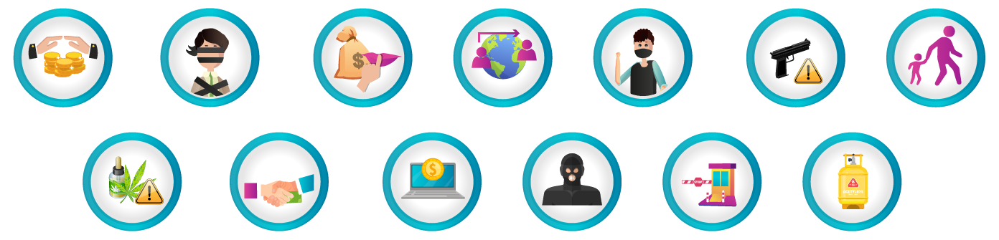
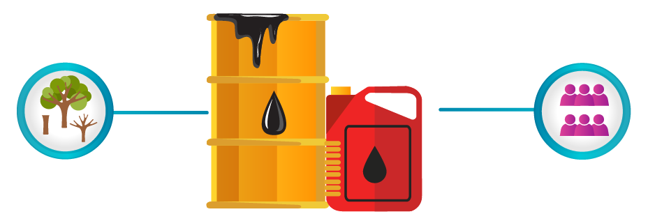
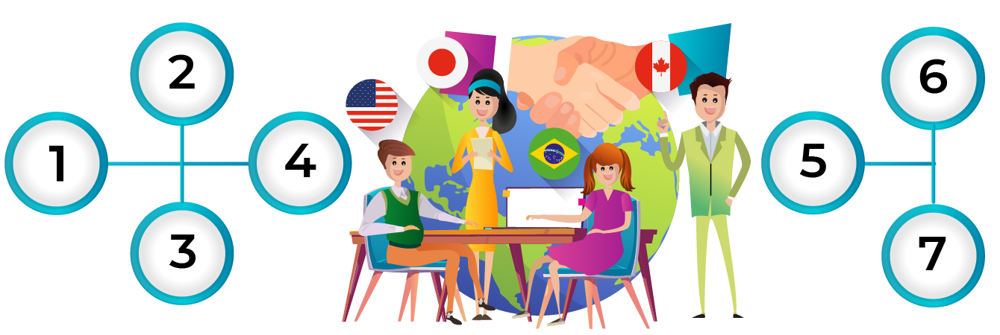

El lavado de activos es el “proceso mediante el cual las organizaciones criminales buscan dar apariencia de legalidad a los recursos generados de sus actividades ilícitas”. En términos prácticos, es el proceso para que el dinero sucio parezca limpio, de forma que las organizaciones criminales o delincuentes puedan usarlo y, en algunos casos, obtener ganancias.
Existen 64 delitos fuente o actividades ilegales que pueden ser asociadas con LAFT. Algunos de estos son:

Delitos ambientales
En 2022, a partir del análisis del contexto externo del Banco, se incluyeron, dentro de las actividades a observar, las consecuencias que la economía ilegal trae a los recursos naturales, lo que impulsó a la creación de la Ley contra los delitos ambientales, la cual enfatiza en la observancia de la minería ilegal.
Se ha identificado por parte de la ONU que la minería ilegal tiene los siguientes efectos en el medio ambiente:
Pasa el mouse sobre los íconos y textos resaltados.

Dato de interés
Explotación de Coltán
La ONU hace un llamado sobre las consecuencias de la explotación del Coltán, que originalmente es explorado en el Congo y que produjo el rebrote de violencia por el dominio de las reservas.
Este mineral es muy utilizado para actividades de construcción de armas de destrucción masiva.
Pasa el mouse sobre el dato de interés
Dato de interés
Conocimiento del cliente
El conocimiento del cliente es muy importante para prevenir el Lavado de Activos y la Financiación del Terrorismo, por ello el Banco Popular cuenta con lineamientos que te permiten tener un conocimiento efectivo, eficiente y oportuno de todos los clientes actuales y potenciales, así como verificar la información y los soportes de los mismos.
Esto implica conocer de manera permanente y actualizada los datos, las características y los montos de las transacciones y operaciones de los clientes.
Perfil de riesgo
Pasa el mouse sobre los textos resaltados
El perfil de riesgo se construye teniendo en cuenta unos factores generales y unos factores independientes que al combinarse dan como resultado el nivel de riesgo en el que se va a ubicar el potencial cliente / cliente.
La debida diligencia se define como “ejecutar algo con suficiente cuidado”. En el caso de SARLAFT, se asocia con el conocimiento de los potenciales clientes y clientes.
En esta tabla se muestra la debida diligencia para cada nivel de riesgo:
Pasa el mouse sobre los textos resaltados
Según numeral 4.2.2.2.1.4 CBJ
Variables cualitativas o cuantitativas del Factor Personas
Nivel de riesgo
Bajo
Moderado
Alto
Extremo
Proceso de conocimiento del cliente
Debida diligencia simplificada
Debida diligencia normal
Debida diligencia mejorada
Debida diligencia intensificada
Proceso de actualización de información
Mínimo 1 vez cada 3 años
Mínimo 1 vez cada 3 años
Mínimo 1 vez al año
Mínimo 1 vez al año
Procesos asociados al conocimiento del cliente
Inicio
Para llevar a cabo las actividades de debida diligencia se deben tener en cuenta cuatro aspectos importantes.
Pulsa los botones para profundizar en cada uno de estos.
Listas vinculantes
Pasa el mouse sobre los textos resaltados
Para realizar una debida diligencia, toda entidad vigilada por la Superintendencia Financiera de Colombia está en la obligación de consultar las listas vinculantes previamente a la vinculación de un potencial cliente y durante la relación con el mismo, de manera que, de ser hallado en ellas, se proceda como corresponda.
Las listas que tienen un reconocimiento legal en Colombia son:
Adicionalmente, se hablará de PEP extranjeros en los siguientes casos:

Beneficiario final
Un Beneficiario Final es toda persona natural que, sin ser necesariamente cliente, reúne cualquiera de las siguientes características:
Pasa el mouse sobre los íconos y textos resaltados
Dato de interés
Países de mayor riesgo
Inicio
Pulsa los botones de abajo para conocer aspectos importantes relacionados con operaciones con países de mayor riesgo.
1
Pasa el mouse sobre los textos resaltados
Para establecer operaciones y/o relaciones comerciales con clientes de países donde no se apliquen razonablemente las recomendaciones del GAFI, será indispensable que el cargo responsable de la Dirección de Comercio Exterior de la Gerencia de Tesorería consulte previamente con la Gerencia de Cumplimiento, de acuerdo con la información pública disponible, el grado de incumplimiento del país de origen a la fecha de realización de la operación.
2
Para establecer relaciones comerciales y/u operaciones con personas que residan o cuyos ingresos provengan o se dirijan a países donde no se aplican suficientemente las recomendaciones del GAFI, se seguirán procedimientos más estrictos.
Pasa el mouse sobre el dato de interés
Dato de interés
Todos aportamos para evitar ser usados como un medio para LAFT
Actividad
Llegó el momento de impedir que Gerard utilice el banco para lavar el dinero que ha obtenido de manera ilícita.
Para ello será necesario que apliques tus conocimientos.
Pulsa el botón “Ir a las preguntas” para resolver algunas actividades.
IR A LAS PREGUNTAS
Enriquecimiento ilícito
Secuestro extorsivo
Extorsión
Tráfico de migrantes – Trata de personas
Rebelión
Tráfico de armas
Tráfico de menores de edad
Tráfico de drogas tóxicas, estupefacientes o sustancias psicotrópicas
Delitos contra la administración pública
Delitos contra el sistema financiero
Financiación del terrorismo y administración de recursos relacionados con actividades terroristas
Fraude aduanero o favorecimiento y facilitación del contrabando
Contrabando de hidrocarburos o sus derivados
Genera un aumento en la tasa de deforestación, terminando con hectáreas productivas de tierra y obligando al cambio del uso del suelo.
Afecta a las comunidades que deben buscar nuevas alternativas de recursos para suplir sus necesidades y esto, sumado a la falta de oportunidades en riesgo, lleva a realizar actividades ilícitas asociadas al lavado de activos.
La actividad minera se encuentra regulada en la Ley 2177 de 2021, por esto en nuestra Entidad esta actividad se encuentra catalogada como de riesgo extremo, siendo necesario realizar actividades de debida diligencia intensificada para aquellos potenciales clientes que hagan parte de cualquier parte de la cadena del sector minero.
El Coltán es un mineral estratégico para Colombia, de acuerdo con el Plan de Desarrollo Minero a 2025.
En 2012 el Servicio Geológico Colombiano identificó un área potencial en Colombia para el Coltán, la cual se estima es de 2.391.400 hectáreas y está ubicada en los departamentos del Vichada y Guainía, riesgos que se evalúan desde LAFT.
Los factores generales técnicamente se conocen como los “factores de riesgo” y se refieren a todos los agentes (circunstancias) generadoras del riesgo de LAFT.
Los factores independientes son la calidad de PEP y el conocimiento del beneficiario final PEP.
Este proceso transversal es el control automático que se hace de verificación de listas, el cual, en la actualidad, se completa en CRM, pero con el cambio a SIEBEL se hará de forma automática, para conocer desde el potencial cliente si la vinculación se detiene por coincidencia en listas vinculantes.
La debida diligencia avanza (se intensifica y se complementa) según el nivel de riesgo.
La actualización se puede hacer por medio de bases de datos, las cuales deberán ser certificadas por el Banco, atendiendo un proceso especial de cumplimiento al esquema de protección de datos. No se puede completar información desde la primera línea de defensa sin ser verificada directamente con el potencial cliente / cliente.
Estas listas son unas bases de datos que reflejan la información de personas que pueden presentar actividades sospechosas, investigaciones, procesos o condenas relacionados con Lavado de Activos, Financiación del terrorismo, Financiación a la Proliferación de Armas de Destrucción Masiva (FPADM) u otras actividades delictivas, responsabilidades fiscales, antecedentes disciplinarios, judiciales, entre otros.
Los servidores públicos que tienen asignadas o delegadas funciones de expedición de normas o regulaciones, dirección general, formulación de políticas institucionales y adopción de planes, programas y proyectos, manejo directo de bienes, dineros o valores del Estado, administración de justicia o facultades administrativo-sancionatorias.
Los particulares que tengan a su cargo la dirección o manejo de recursos en los movimientos o partidos políticos (ordenación de gasto, contratación pública, gerencia de proyectos de inversión, pagos, liquidaciones y administración de bienes muebles e inmuebles).
Las personas que desempeñan funciones públicas destacadas en otro país.
Jefes de Estado, jefes de Gobierno, ministros, subsecretarios o secretarios de Estado.
Congresistas o parlamentarios.
Miembros de tribunales supremos, tribunales constitucionales u otras altas instancias judiciales cuyas decisiones no admitan normalmente recurso, salvo en circunstancias excepcionales.
Miembros de tribunales o de las juntas directivas de bancos centrales.
Embajadores, encargados de negocios y altos funcionarios de las fuerzas armadas.
Miembros de los órganos administrativos, de gestión o de supervisión de empresas de propiedad estatal.
Representantes legales, directores, subdirectores y/o miembros de las juntas directivas de organizaciones internacionales.
Es aquella persona que, pese a no ser propietario de una participación mayoritaria del capital de la persona jurídica que actúa como cliente, ejerce el control de la persona jurídica, de acuerdo con lo establecido en los términos del artículo 261 del Código de Comercio.
Es propietaria, individual o conjuntamente, directa o indirectamente de una participación superior al 5 % del capital social, aporte o participación en la persona jurídica que actúa como cliente.
Es aquella persona por cuenta de quien se lleva a cabo una transacción. Se entiende que esta persona es sobre quien recaen los efectos económicos de dicha transacción.
El Banco debe tener en cuenta las notas interpretativas de las recomendaciones relacionadas con el beneficiario final emitidas por el Grupo de Acción Financiera Internacional para la Prevención del Lavado de Activos (GAFI).
Para lograr un adecuado control de las jurisdicciones de mayor riesgo, la Gerencia de Cumplimiento dispondrá el suministro actualizado de la relación de países con los cuales no se deberán adelantar transacciones.
El listado de estos países se publica en un boletín general para el conocimiento de todos en el Banco.